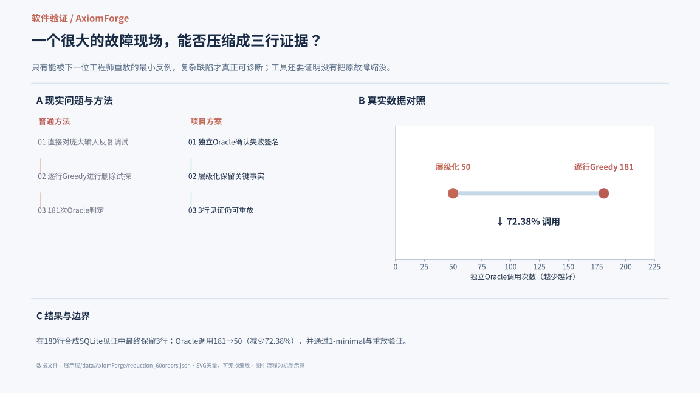
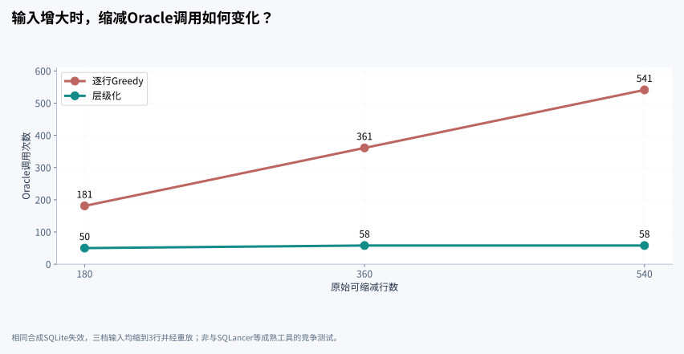

软件验证 / AxiomForge
一个很大的故障现场，能否压缩成三行证据？
只有能被下一位工程师重放的最小反例，复杂缺陷才真正可诊断；工具还要证明没有把原故障缩没。
01 / 为什么这个问题值得解决
SQL JOIN可能悄悄重复计量；大输入导致Oracle回归昂贵，人工缩减容易丢失故障。
02 / 看见差别：普通方法如何失效，项目如何介入
普通方案
普通方法／风险路径
风险所在：关键状态可能被误认
阶段 1直接对庞大输入反复调试
阶段 2逐行Greedy进行删除试探
阶段 3181次Oracle判定
项目方案
有证据的项目方法
解决方式：明确条件，留下验证证据
阶段 1独立Oracle确认失败签名
阶段 2层级化保留关键事实
阶段 33行见证仍可重放
阶段 1 / 3
很多失败不是报错，而是结果悄悄变错
普通方法：风险在哪里旧做法：SQL仍可执行，但多表JOIN导致业务汇总重复计量。
项目方法：具体改变什么项目方法：针对事实粒度建立独立判定Oracle，先确认错误确实存在。
过程为机制示意，帮助非技术读者理解不同决策逻辑；不是未经测量的真实系统运行轨迹。
03 / 技术细节与证据放在同一个画面

181 → 50
指定Oracle调用次数
在180行合成SQLite见证中最终保留3行；Oracle调用181→50（减少72.38%），并通过1-minimal与重放验证。
在180行合成SQLite见证中最终保留3行；Oracle调用181→50（减少72.38%），并通过1-minimal与重放验证。
原始数据：AxiomForge/reduction_60orders.json。图像采用SVG矢量格式，可放大用于演示和阅读。基线与结论均限定于数据文件对应的实验条件。
04 / 把输入规模放大，传统缩减的诊断代价怎样变化
额外在60、120、180条订单的同一类SQLite扇出缺陷上重复实验（实际可缩减行数为180、360、540）。随着输入增大，逐行Greedy需要181、361、541次Oracle调用；层级化方法分别只需50、58、58次，并保持同样可重放的3行最小见证。这是可验证的局部算法效率，不是已经覆盖全部真实数据库缺陷的通用结论。

原始结果：三档规模与独立重放收据。未与更高级的行业缩减器进行公平竞争性测试。